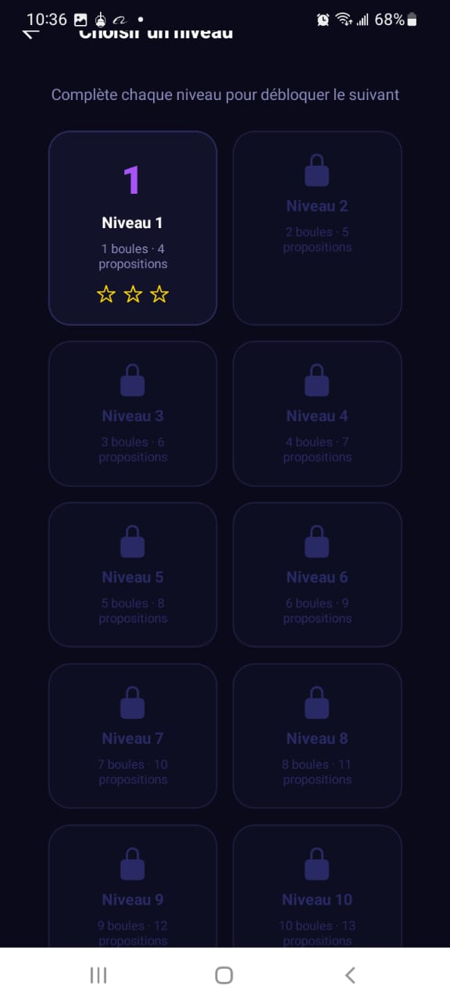
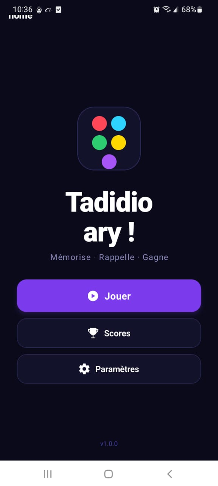
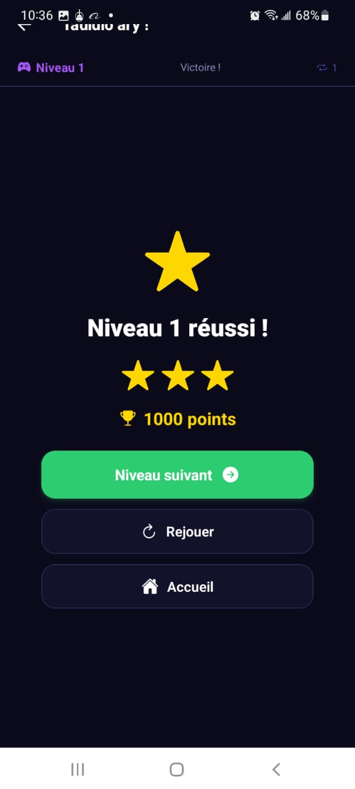
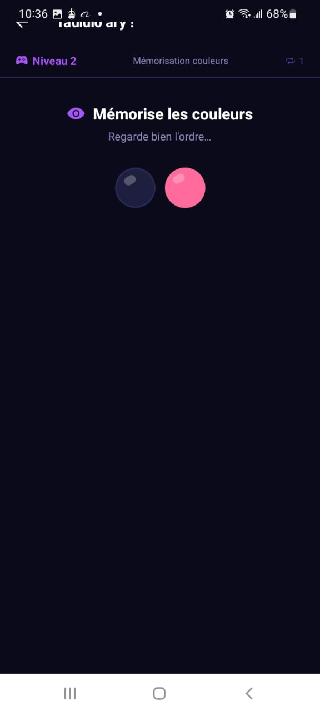
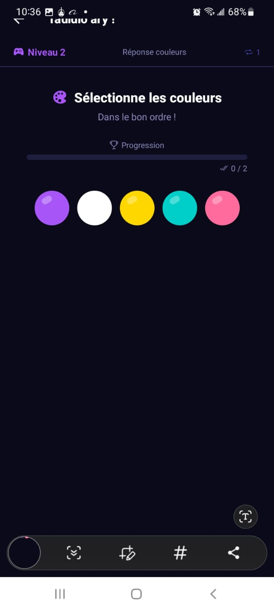
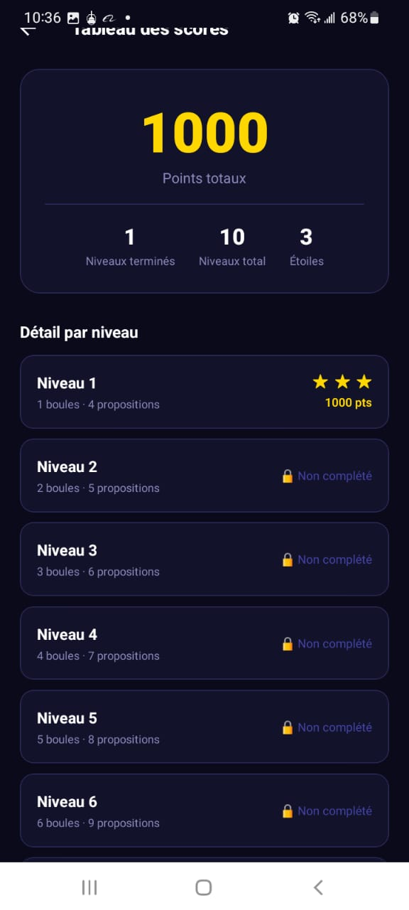
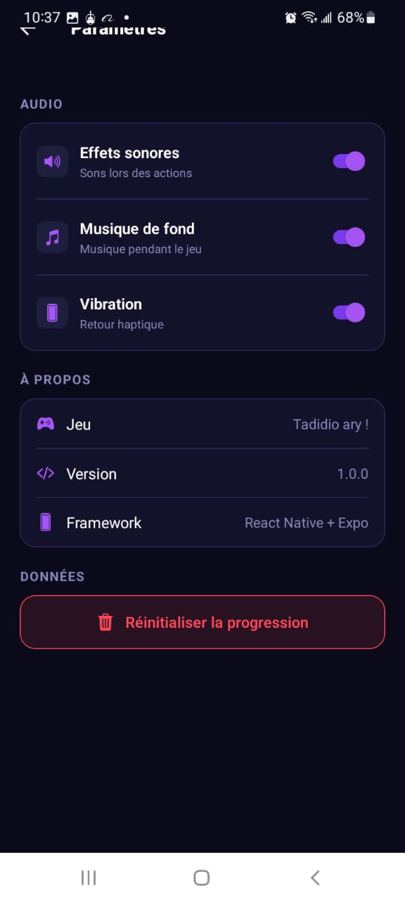

Écran 01
Choix des niveaux
Écran de sélection des niveaux : le joueur progresse étape par étape et débloque les niveaux suivants après réussite.
Jeu mobile de mémoire basé sur des séquences de couleurs. Le joueur mémorise un ordre, le reproduit, gagne des points et débloque progressivement de nouveaux niveaux.
Jeu mobile de mémoire basé sur des séquences de couleurs. Le joueur mémorise un ordre, le reproduit, gagne des points et débloque progressivement de nouveaux niveaux.
Le jeu combine mémorisation visuelle, progression par niveaux, score et paramètres audio/haptiques dans une interface mobile cohérente.

Chaque capture ci-dessous explique une page, une fonction ou un moment important du projet.
Écran de sélection des niveaux : le joueur progresse étape par étape et débloque les niveaux suivants après réussite.

Écran d’accueil de Tadidi Ary avec les accès rapides pour jouer, consulter les scores et ouvrir les paramètres.

Écran affiché après la réussite d’un niveau, avec les étoiles gagnées, les points et le bouton pour continuer.

Phase de mémorisation : l’utilisateur observe l’ordre des couleurs avant de répondre.

Phase de réponse : le joueur sélectionne les couleurs dans le bon ordre et suit sa progression.

Tableau des scores présentant le total de points, les niveaux terminés et les étoiles obtenues.

Paramètres du jeu : effets sonores, musique, vibration, informations sur la version et réinitialisation de la progression.